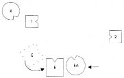
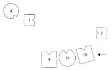
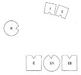
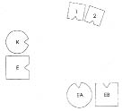

HELLINGER Isabel’e Bize kısaca durumundan söz et.
ISABEL Oğlum on bir yıl önce büyük bir kaza geçirdi, sakat kaldı. Kocamın ailesinin söz konusu olduğunu sanıyorum, çünkü annesi kazada ölmüştü. Kocamın kız kardeşi de büyük bir kaza geçirdi ama o sağlığına yeniden kavuştu.
HELLINGER Oğlun kaç yaşında?
ISABEL Otuz bir.
HELLINGER Önce güncel aileni dizelim, diğer kişileri sonra alalım. –Kaç çocuğun var?
ISABEL İki.
HELLINGER Sen ya da kocan önceden bir evlilik ya da ciddi bir ilişki yaşadınız mı?
ISABEL Hayır.
HELLINGER Peki. Önce kocanı, kendini ve çocukları diz, sonra da eşinin annesini.
1. Resim

E Erkek
K Kadın (=Isabel)
1 İlk çocuk, bir kazanın ardından sakat kalmış
2 İkinci çocuk, oğlan
EA Erkeğin annesi
HELLINGER Erkek nasıl? Annenin de dizime katılmasıyla ne değişti?
ERKEK Bacaklarım zayıf ve titrek. Kendimi çok rahatsız hissediyorum. Annem de dizime katıldığında bu daha da arttı.
HELLINGER Ona iyice yaklaş. –Şimdi nasıl?
ERKEK Daha iyi. Kendimi daha sağlam hissediyorum ama şimdi de çevremle ilişkim kesildi.
HELLINGER Isabel’e Annesinin ailesinde ne olmuş?
ISABEL Kocası savaşta kaybolmuş.
HELLINGER Onu da ekleyelim.
2. Resim

EB Erkeğin babası, savaşta kaybolmuş
HELLINGER Büyük oğul nasıl?
İLK ÇOCUK Annemi hiç hissetmiyorum. Büyükannemse bana korkutucu geliyor.
HELLINGER Seni şimdi bu güç alanından çıkarıyorum.
Hellinger resmi değiştirir.
3. Resim

HELLINGER Kadın nasıl?
KADIN Daha iyi. Demin çok kötüydüm. Büyük oğlumun yüreğimi ezdiğini hissediyordum. Erkekle hiçbir ilişkim yok. Annesi de geldiğinde durum tehditkâr bir hal aldı. Şimdiyse oğullarıma doğru bir akım hissediyorum. Daha serbestim. Derin nefes alır.
HELLINGER Oğullar nasıl?
İLK ÇOCUK Daha iyi.
İKİNCİ ÇOCUK Ben de daha iyiyim. Az önce kendimi yitik hissediyordum.
HELLINGER Koca şimdi nasıl?
ERKEK Doğru yerdeyim. Karıma doğru çekiliyorum.
Karısının yanına geçer ve yüzü güler.
4. Resim

HELLINGER Isabel’e Bende oluşan resim, kocanın hem babasını hem de annesini izlemeye doğru çekildiği. Ama kocan onların peşinden gideceğine oğlu bu kazayı geçirmiş. Bende oluşan resim bu. Oğul babaya “Senin yerine ben giderim” diyor. Ama ölmüşler görüş alanına girip kabul gördüğü an kocan da oğlun da kalabilir.
ISABEL Kabul gösterdiği ve ?..
HELLINGER Ölmüşleri saydığı ve onlara korkusuzca, açıkça baktığı an. Bunu şu anda yaptığı görülebiliyor. Ondaki değişimi görüyor musun?
ISABEL Evet.
HELLINGER Çocuklarınız bu durumda özgürleşir. Ancak çocukların annenin etki alanına girmesi gerek. Çünkü babanın ailesi fazlasıyla yük altında. Tamam mı? -Şimdi seni yerine yerleştireceğim. Kocasının yanına geçen Isabel’e Kocana oğlunuzun bakımını birlikte üstleneceğinizin güvencesini ver şimdi. Bunu söyle ona!
ISABEL Kocasına Oğlumuzun bakımını birlikte üstleneceğiz.
HELLINGER Bunu işittiğinde erkek kendini nasıl hissediyor?
ERKEK Bunu kabul etmek gücüme gidiyor. Kendimi az önce burada çok güçlü hissetmiştim; söylediğini kabul etmek zor geliyor.
HELLINGER Isabel’e Ona “Oğlumuzun bakımında sana yardımcı olacağım” demen gerek.
ISABEL Oğlumuzun bakımında sana yardımcı olacağım.
HELLINGER erkeğe Böyle daha mı iyi?
ERKEK Daha iyi.
HELLINGER gruba Asıl sorumluluk erkeğe ait. Kadın ona yardımcı olabilir ama sorumluluğu paylaşamaz. Erkek o zaman yardımını kabul edebilecek. Baş sorumluluk onun, çünkü oğul bunu onun için ve onun yerine yapmış.
Isabel’e Bu senin için yeterince açık mı?
ISABEL Durumun böyle olduğu açık benim için.
HELLINGER Tamam, bu kadar.
Gruba Bu konuda sorusu olan var mı?
KAZA GEÇİREN OĞLUN TEMSİLCİSİ Kişi böyle bir kurban rolündeyken ona düşen nedir? Nedir kurban için doğru olan?
HELLINGER Bunu atladık. Onun için de bu soru çok önemli, tamamlayıcı bir soru.
Oğul burada olsa ondan babasına şöyle demesini isterdim: “Babacığım, bunu senin için severek üstlendim.” Gerçek bu. Ve gerçek gün yüzüne çıktığında ondan güç doğar. -Bunu hissedebiliyor musun?
KAZA GEÇİREN OĞLUN TEMSİLCİSİ Evet. –Oğlun, bunu neden babanın kendisinin yapmadığını düşünmesine gerek kalmaz mı o zaman?
HELLINGER Hayır, gerek kalmaz. Geri dönüşü olmayan bir alınyazısı taşımakta. Ama dönüp geriye baktığında onu harekete geçireni görür ve bununla barışır daha çok. Ebeveyninin bakımını da tertemiz bir vicdan ve yürekle de kabul eder ki bu da çok önemli. Çünkü aksi takdirde çocuk ana babasına yük olmaktan korkar. Ama bu şekilde kendisini çok güzel bir masumiyet ve sevgi bağlamında algılar.
BABANIN TEMSİLCİSİ Dizimin sonundaki durum konusunda bir şey söylemek istiyorum. Kaza geçiren oğlumun karşısında dururken kendimi inanılmaz güçlü hissettim ve çok kuvvetli bir bağın varlığını algıladım.
HELLINGER Isabel için önemli bir geribildirim daha.
KATILIMCI KADIN Küçük bir sorum var. Çocuklardan hangisinin böyle bir rol üstleneceğine ilişkin bir kural var mı?
HELLINGER Çoğu zaman büyük çocuk ama değişmez bir kural yok.
BAŞKA BİR KATILIMCI KADIN Burada olup bunu yaşayabildiğim için şükran duyduğumu belirtmek istiyorum. Bu çocuk oğlumla aynı okula gidiyordu. Burada olanları gerçeğe çok uygun olarak algıladım.